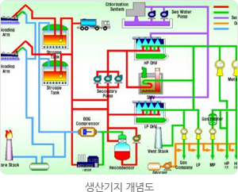
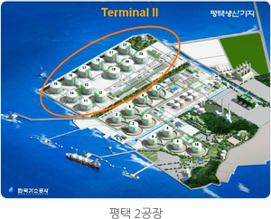

LNG기술
LNG생산기지
LNG 생산기지 기본 설계
LNG인수기지 기본설계 국산화 - 평택 2공장 및 삼척기지에 적용
우리공사는 그동안 M.W.Kellogg, Sofregaz 등 외국설계사에 의존해오던 LNG생산기지 기본설계 기술을 내재화하여 평택생산기지 제2공장 건설사업에 성공적으로 적용하였습니다. 그 동안 기본설계(FEED: Front End Engineering Design) 부문에서 기술축적이 이루어지지 않아 해외 기술의존도가 매우 높은 실정이었으나 평택 2공장(2003년)과 삼척기지(2009년) 기본설계 프로젝트를 성공적으로 수행함으로써 우리공사의 핵심역량을 강화하고 기술경쟁력을 높이는데 크게 기여하고 있습니다. 특히, 이 프로젝트들은 공사 경영진의 결단에 따라 우리공사의 건설담당부서와 연구개발원이 공동으로 내부역량을 결집하여 성공적으로 수행한 모범적인 스폰서십 프로젝트였다는 점에서 시사하는 바가 매우 큽니다.
평택생산기지 제2공장은 기존 제1공장의 북쪽에 인접한 바다를 매립하여 조성한 약 20만평의 부지에 장기천연가스수급계획에 따라 2013년까지 저장용량 236만㎘(저장탱크 13기)와 시간당 2,160톤 규모의 기화송출설비를 건설하는 프로젝트입니다. 이 프로젝트를 완성하기 위해서는 우선 기존의 운영중인 평택기지 제1공장의 설비를 분석한 후 기존기지와 신설 인수기지(제2공장)와의 연계를 고려하여 설계하여야 하고, 두 번째로는 제2공장의 저장설비가 완공되기 전인 2005년도에 제1공장의 LNG를 기화시켜 송출하는 설비를 먼저 갖추어야만 했습니다. 이처럼 세계적으로 유례가 없는 복잡하고도 어려운 프로젝트를 성공적으로 완수했다는 점에서 우리공사의 역량과 경쟁력이 높이 평가받고 있습니다.
또한, 삼척기지 기본설계를 자체적으로 완성함으로서 약 140억원의 예산절감과 약 170억원의 수입대체 효과를 기대하고 있습니다.
우리공사는 LNG탱크 국산화 개발사업을 통해 세계에서 3번째로 9%니켈형 및 멤브레인형 저장탱크 설계기술을 확보한데 이어 LNG인수기지 기본설계 실적을 확보함으로써 LNG 가치사슬의 하류부문에서 일관기술체계를 갖추게 되어 공사의 대내사업은 물론 대외사업에도 경쟁력을 갖추게 되었습니다.
평택생산기지 제2공장은 기존 제1공장의 북쪽에 인접한 바다를 매립하여 조성한 약 20만평의 부지에 장기천연가스수급계획에 따라 2013년까지 저장용량 236만㎘(저장탱크 13기)와 시간당 2,160톤 규모의 기화송출설비를 건설하는 프로젝트입니다. 이 프로젝트를 완성하기 위해서는 우선 기존의 운영중인 평택기지 제1공장의 설비를 분석한 후 기존기지와 신설 인수기지(제2공장)와의 연계를 고려하여 설계하여야 하고, 두 번째로는 제2공장의 저장설비가 완공되기 전인 2005년도에 제1공장의 LNG를 기화시켜 송출하는 설비를 먼저 갖추어야만 했습니다. 이처럼 세계적으로 유례가 없는 복잡하고도 어려운 프로젝트를 성공적으로 완수했다는 점에서 우리공사의 역량과 경쟁력이 높이 평가받고 있습니다.


삼척생산기지는 우리공사의 제4기지로서 저장용량 280만㎘(20만㎘급 저장탱크 14기)와 시간당 1,320톤 규모의 기화송출설비를 건설하는 프로젝트입니다. 이 프로젝트는 2008년 착수하여 2009년 3월까지 기본설계를 완료하고, 2009년 하반기에 공사를 착수하여 2013년에 1단계 공사를 완공하게 됩니다.
또한, 삼척기지 기본설계를 자체적으로 완성함으로서 약 140억원의 예산절감과 약 170억원의 수입대체 효과를 기대하고 있습니다.
우리공사는 LNG탱크 국산화 개발사업을 통해 세계에서 3번째로 9%니켈형 및 멤브레인형 저장탱크 설계기술을 확보한데 이어 LNG인수기지 기본설계 실적을 확보함으로써 LNG 가치사슬의 하류부문에서 일관기술체계를 갖추게 되어 공사의 대내사업은 물론 대외사업에도 경쟁력을 갖추게 되었습니다.